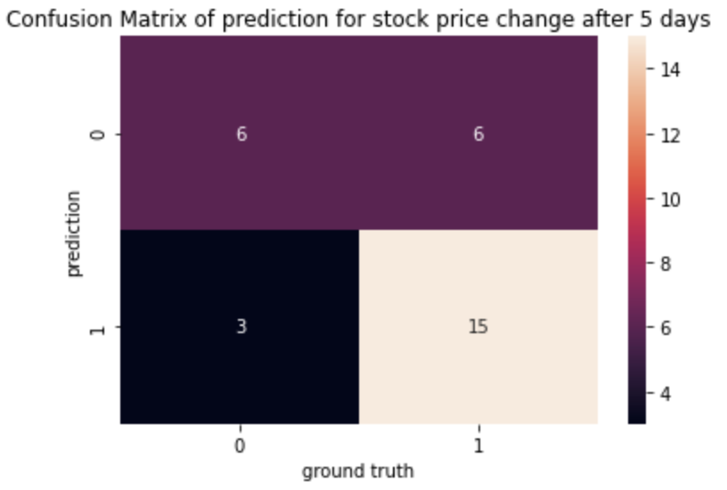

Introduction
Nowadays, we are seeing a great amount of data generated everywhere. The Data will bring us both challenges and opportunities. As AutoPhrase is developed, an automated and domain-independent phrase mining method, we see its potential to be used on extracting quality phrases from numerous daily financial news and editorials, to improve the current data prediction model using bag-of-words and other conventions as its entry. This experiment could be very promising since it can be a quick classifier of long text reports. Analysts then may use the result as a supportive reason for future investments. Thus, adapting this method could improve the efficiency with the same accuracy if used properly. In this project, we will give a report of comparison of performances among conventional methods and AutoPhrase on predicting the change of stock price (increase or decrease). We will also include the comparison between the performances of AutoPhrase and deep learning methods on predicting the change of the stock price.
Baseline Model
We used the Bag-of-Words method to generate the baseline model. After removing stopwords, removing punctuation, and stemming the text, we performed Bag-of-Words to get the top n words with the highest frequencies. Then we compare the extracted words with positive and negative words in the financial news dataset. If the number of positive words is larger than that of negative words in a document, we give the output as 1. Otherwise we give 0.
AutoPhrase Model
After building the baseline model, we tried to explore more methods to predict the change of stock price. Instead of using native methods like Bag-of-Words to extract the words in articles, we considered to extract high-quality phrases. Therefore, we utilized AutoPhrase to perform phrase mining tasks. AutoPhrase is a framework that extracts quality phrases from text. After running AutoPhrase, we will get the top high-quality phrases in an article with their scores. We will then use the positive and negative word lists to determine the attitude of the words. Finally, we use the scores and their attitude to predict the stock price change.

We tried to predict the stock price change (1 = increase and 0 = decrease) after 5 days, 15 days, and 30 days after the published day of the news and got f1-scores 0.64, 0.60, 0.58 respectively. From the confusion matrices above, we could see that the model performs relatively well when the ground truth label is 1.
Doc2vec & LSTM Model
LSTM stands for Long Short Term Memory Network, and it’s a special version of Recurrent Neural Network. We believe that it could outperform the Baseline model because first of all, there should exist some connections between each financial news and the company’s financial decisions. Besides, The combination of the LSTM model with Doc2vec model also addresses the limitations that Bag-of-Words model has, which are the problem of word order and syntax. We will first obtain our vector embedding matrix from our Doc2vec model, and then we will fit in the embedding matrix as the weight to train our LSTM model, and from that we are able to predict the movement of stock price from specific time span given the financial news articles.
From the confusion matrices, we can see that the accuracy is relatively high, but it is mostly due to the insufficient amount of the training and testing datasets we have. However, we also try to apply the model on a larger dataset for sentiment analysis of the financial news title, which also has the binary labels. The output is relatively normal and gives an accuracy of 0.6107 on the test set and 0.63 on the validation set. Therefore, we believe that this combination of LSTM and Doc2vec model really has the potential to work with financial news and give relatively good predictions.
BERT Model
BERT, as our state-of-the-art algorithm, outperforms any existing model in sentiment analysis by far. Our hypothesis is a relative version of sentiment analysis. We use a sentiment analysis pre-trained model and map positive labels to forecast an increase of the stock, and negative labels to forecast a decrease of the stock.
As we see, this model gives 85% accuracy and reaches a very promising batch MCC score goes to 0.710. This means we are predicting at least 71% correct. This result indeed supports that NLP is a great help in constructing stock predictors, and is very promising in the future.
Discussion & Conclusion
Based on our experiments, the BERT model outperforms other models by far, whose accuracy was higher than 0.7. AutoPhrase model and LSTM model got the accuracy around 0.63, which met out expectations. However, one problem was that the size of our training and test data was relatively small, and we were only able to apply the models on Apple Inc. due to time limitations. The models could still be improved with more data.